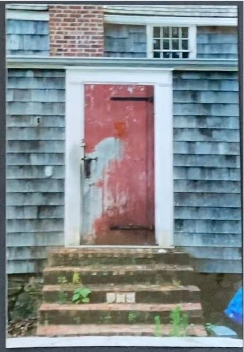

836 Springs Fireplace Road
Three renovations, one barn
Read from a survey, a photograph album, and a set of finished-house pictures — what the property was, what the renovation before this one did to it, and what is still standing from each.
The compound
before the previous renovation
Not one house but a cluster: a two-storey shingled dwelling with a red door and brick steps, a timber-framed barn with a run of glazing set into its roof slope, a long low shed range under a covered walk, and an in-ground pool sitting right up against the house. Everything grey, everything weathered.




The renovation before this one
from the album
A gut. Floors came out to the joists, walls back to the hand-hewn frame, windows out. New concrete-block foundations went in on the wetland side, a second floor was framed onto the dwelling, a tall brick chimney was built, and the whole thing was re-shingled. The barn was kept. So were the wide-plank floors and a carved cast-iron firebox.


This renovation
photographed by Tim Williams
The barn survived a second time and became the kitchen — the hand-hewn frame reworked as painted trusses with steel tie rods through it. The brick chimney stayed. The pool ground became the bluestone terrace and fire pit. Everything went white cedar, black steel windows, marble and oak.


What survived what
Traced element by element across the two renovations. Where the evidence runs out, the row says so.
| Element | Previous renovation | This one | Evidence |
|---|---|---|---|
| The barn | Kept | Kept | The oldest thing on the property and the only structure to survive both renovations intact. Pollock-and-Krasner-era. Now the kitchen. |
| The brick chimney | Built new | Kept | Not original — it goes up in the album’s photographs. It is the chimney beside the entry porch today. |
| The dwelling | Gutted, second floor added | Rebuilt around | The core is old; the massing was largely set by the previous renovation, on new block foundations toward the wetland. |
| The in-ground pool | Still in use | Gone | Visible beside the house in the album, and again behind the new foundation wall. Absent from every current frame, and absent from the 2021 survey — the terrace and fire pit occupy that ground. |
| The shed range | Standing | Possibly the outbuilding | A long low range under a covered walk. Something of that footprint reads as the outbuilding across the terrace today, but this one is an inference. |
| Wide-plank floors, cast-iron firebox | Salvaged | Unclear | Both were photographed as saved pieces. Whether either survived into the current house is not visible in the Tim Williams set. |
What would sharpen this
- Which building is which. The album shows a barn, a dwelling and a shed range as separate things; the 2021 survey shows one merged footprint. Walking the plan on site would pin each down.
- When the previous renovation happened. Film prints, cordless tools and the trucks in frame read late 1990s to mid 2000s, but nothing in the album is dated. A permit or CO would fix it.
- The pool. It is in the early photographs and gone from the current ones, and it is not on the 2021 survey at all.
- The salvage. Wide-plank floors and a carved cast-iron firebox were photographed as kept pieces. Whether either is in the house now is not something the photographs answer.